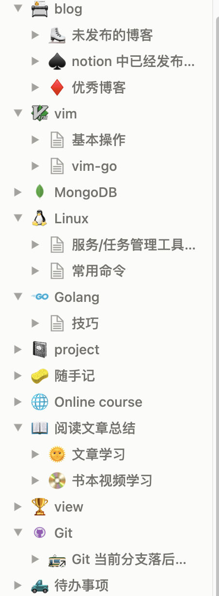
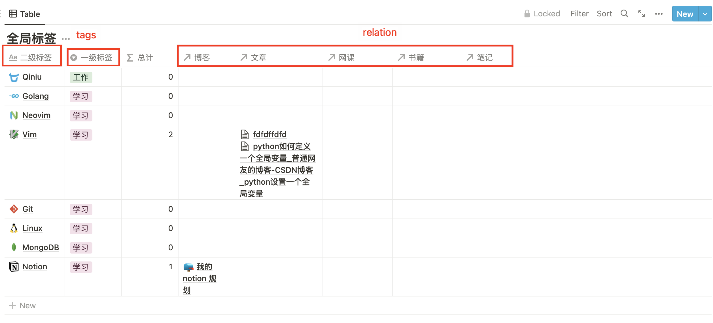
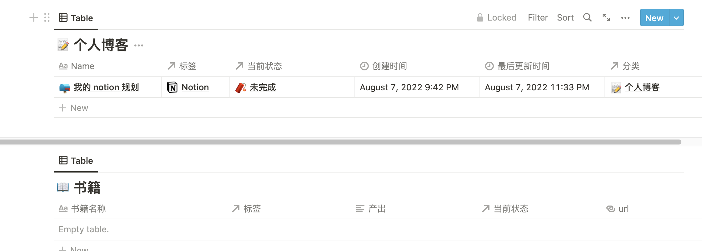
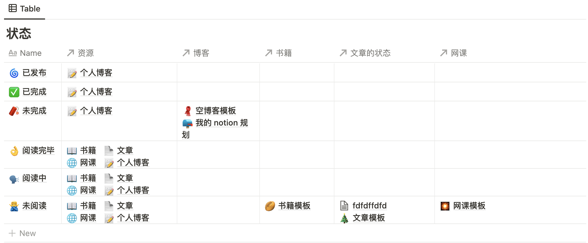
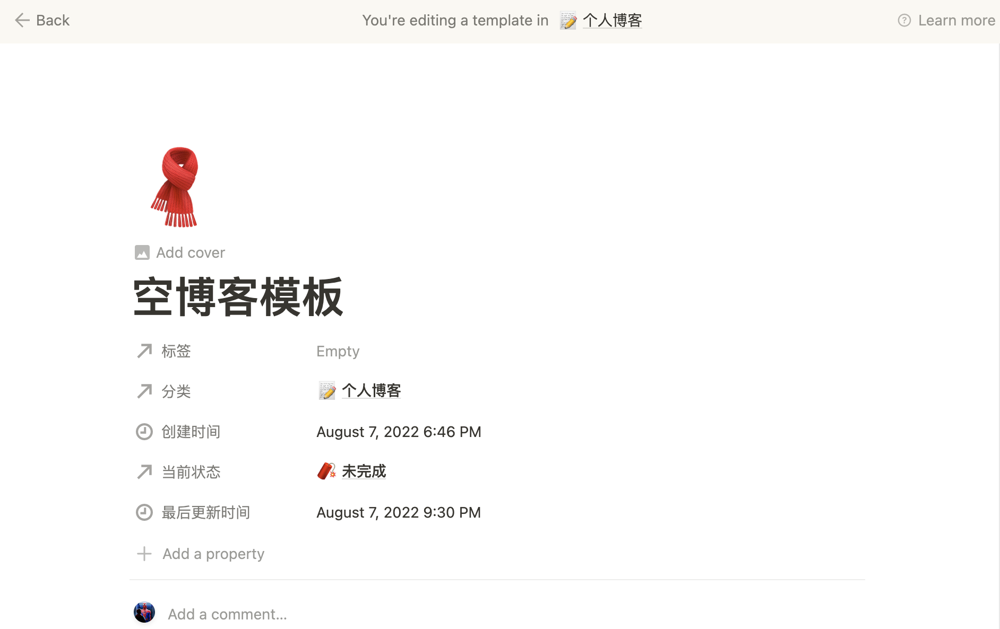
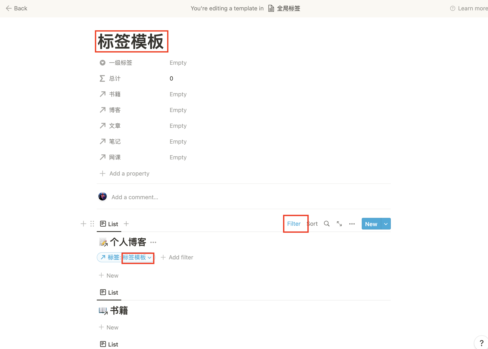

本篇文章主要会介绍我为什么会选择使用 notion，以及我在 notion 中的规划。
为什么选择 notion
起初，我的笔记是本地 markdown+goodnotes ，如果电脑和 ipad在身边还好，可以实时看到自己的笔记。但是如果没有带其中的一样，那么笔记就不全。
之后的一段时间还使用过 OneNote ，它的同步速度很快，无论是在手机、电脑、iPad 随时随地都可以看到自己的笔记，但是OneNote 的逻辑不是很清楚，它就像一大张草稿纸等待我去填充，就像小时候的手抄报一样要自己设置格式，在调整格式上对于我来说要花费很多的时间。
再之后用过两个多月的 飞书，起初用飞书的感觉真的不错，可以多端同步、支持 markdown、免费，这些都很不错，但是这些自从实习后换了电脑就都不是重要的了。飞书在电脑上无论你是否安装了客户端都会在网页中打开飞书文档，当标签页开的多之后，飞书文档的网页就会很卡，这当然和我的配置有关，目前公司配的是丐版的 MacBookPro只有 8GB 内存。
目前使用的 notion 没有了其它三个的缺点，但是有一个致命的缺点——服务器在国外，这说不定那天就不能用了。但是我还是选择了它。
我的第一版的 notion
刚开始使用 notion 发现它的嵌套页面非常不错，notion 中万物都是 block，block 中有 block ，就连页面都是 block。我按照之前的逻辑设计了一版的 workspace。
我是按照自己的使用习惯来分类的。
我有个网站需要写一些博客，但是博客不一定每次都是一次性写完的，需要有待写的以及写完的、发布的。
同时自己之前学习过一段时间的 Vim 目前开发用的也是 Neovim，自己也需要记录，这一部分可能是可以公开的(写成博客)，也可能是不想公开的。同理学习 MongoDB、Linux、Go、Git等等都是这样的。
同时看到不错的文章、书籍、教学视频、官方文档在学习之后也要做一些笔记，要不然忘得很快。
这时候就出现了一个问题，有的内容属于多个目录时候该怎么办？
比如我写了篇关于 Vim 使用的文章，我想把它分享出去，这时候应该属于Blog 呢还是 Vim 呢？当然我可以使用 link 的方式链接过去，但是这种分类方式可能就不太适合这种情况了。
我的需求是什么？
当我觉得上述分类不太合理的时候，想要换一种方式来管理这些，但是有没有好的思路的时候，我将自己的需求整理了出来。
- 看别人的博客，进行总结
- 看视频进行学习，记笔记
- 看官方文档学习，记笔记
- 记录工作的情况，记笔记
- 保存自己的想法，或者是未发布、正在写的博客
- 记笔记
上面这六点是我书写文档的目的，上面其实可以分为两大类，一个是工作另一个就是学习，当然可能会有生活上的事情，但是这些可能不会通过写文档的方式进行保存。
对于看别人的博客、视频、文档等都是自己摄取知识的来源，我把这些称之为资源。
对于要学习的内容，比如说 Go 这个是学习下面的一个模块，而我通过什么样的途径来学习就是资源。
在学习的过程中会有输出，我把笔记和博客称为输出。
我目前已经抽象出来了 工作 和 学习 ，笔记、博客、视频、文档、书籍几种资源，学习的内容：Go、Linux… 这些如何关联起来呢，这就需要使用 notion 的一个特殊的 block ——database。
这里的 database 和计算机中的 database 是类似的，只不过这里的一个 database 就是一张表，有了表之后就可以通过某种方式把他们关联起来——这就是relation，通过 relation 可以把多个 database 关联起来一起管理。
根据不同的资源分类那么就有——笔记 database、博客 database、视频 database、文档 database、书籍 database。
根据大类工作和学习，我重新进行了划分，他们下面又有子分类。
- 工作
- 公司 1
- 公司 2
- 学习
- go
- vim
- Git
- …
每种资源会和上面的分类进行组合。这样就不会出现有内容不知道放在那个分类的尴尬处境了。
当然每种资源都有各自同的属性，
除此之外，我还添加了阅读或者完成的状态。
将状态和资源进行关联起来就可以看到不同学习内容当前的进度了。
每添加一条数据的时候，有些数据可能是计算出来的，或者是固定的，我们可以使用 template 生成。
我的数据库都使用了模板生成。每次只需要要填上标题和标签即可。
对 database 的视图也可以生成模板
我想看到每个二级标签中都有哪些内容，就可以使用不同的视图+filter 进行展示。如果不用模板，我每一条都要使用手动复制 database link 过来处理，有了模板之后，就可以在添加记录的时候将这些视图都添加好。
总结
以上就是我目前 notion 的规划。这是模板链接
参考
https://theblock.notion.site/theBlock-fa78e71c91bc4023a9c045520a848846